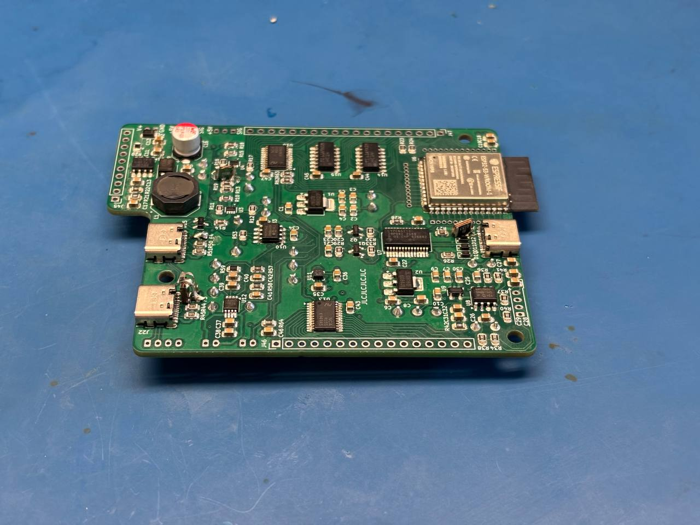
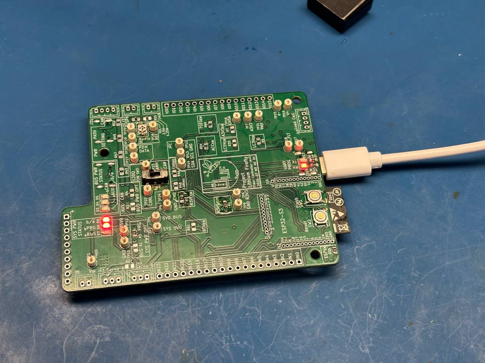
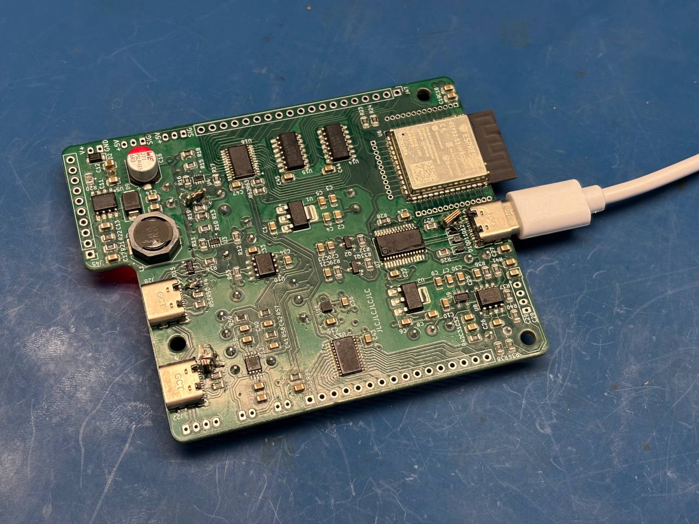

Boot-Up and Initial Testing
Today, I wanted to test the PCB's basic functions, particularly the ESP32-S3. Before testing, I first needed to complete the assembly. I selected PCB unit 1 because it was the only board with all SMD components installed.
The remaining manual-soldering tasks were:
- Solder the LEDs on the bottom side.
- Solder the test points.
- Solder the switches.
- Solder the fuses, which had not been installed earlier because the PCB used the wrong footprint.
Manual Assembly and Cleaning
After completing most of the soldering, I cleaned the flux residue with isopropyl alcohol (IPA). The laboratory's IPA bottle had rusted through and deposited rust particles on the PCB. I signed out another IPA bottle from the tool room and continued cleaning. Some white residue remained, particularly between IC pins, so I planned to finish cleaning the board at home with an IPA spray bottle.

I installed the 1812 fuses vertically and at an angle so they could connect to the 0805 footprints. I replaced the downstream 3 A fuse with a solder bridge because its pads had started to lift from the PCB.
Power-Path and MCU Testing
I then tested the power path in the following sequence:
- I tested the programming USB input and the system power OR-ing circuit; both operated correctly.
- I tested the 3.3 V regulator, which produced 3.34 V without a load.
- I wrote and flashed a simple UART-mirroring program for the ESP32-S3.
The UART-mirroring program operated correctly, demonstrating that the MCU was functional.


I also tested the CAN/auxiliary power OR-ing circuit. It behaved correctly: the CAN voltage input was prioritized over the programming USB input.
Configuration Resistors
To perform these tests, I populated the following 0 Ω resistors:
R1— enabled the 5 V bus connection to the system power OR-ing input.R4— enabled the CAN 5 V power OR-ing input.R5— enabled the programming USB connection to the system power OR-ing input.R6— enabled the 5 V input to the 3.3 V regulator.R8— enabled the 3.3 V regulator output.R25— enabled the ESP32 3.3 V supply.